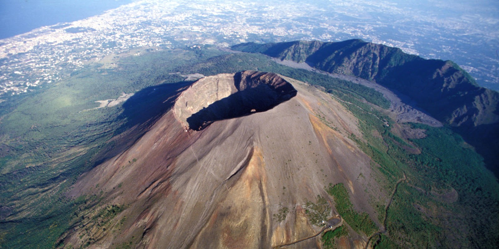
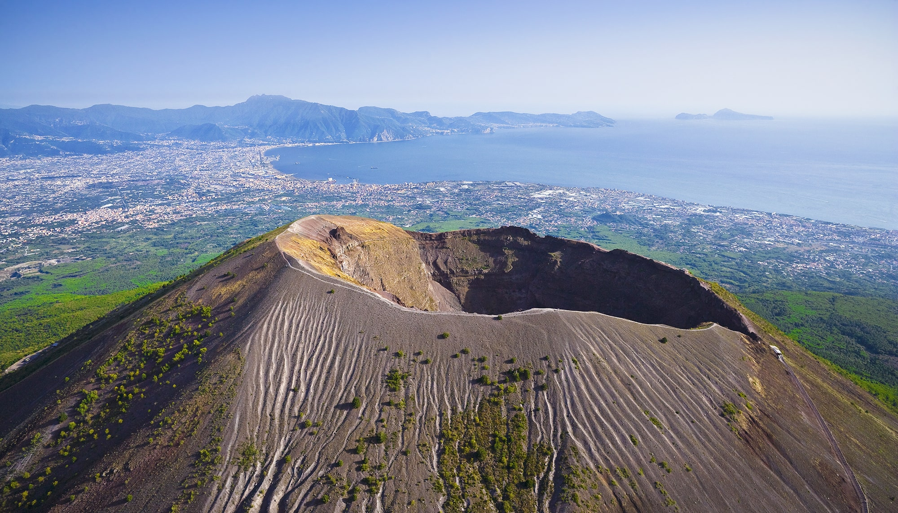
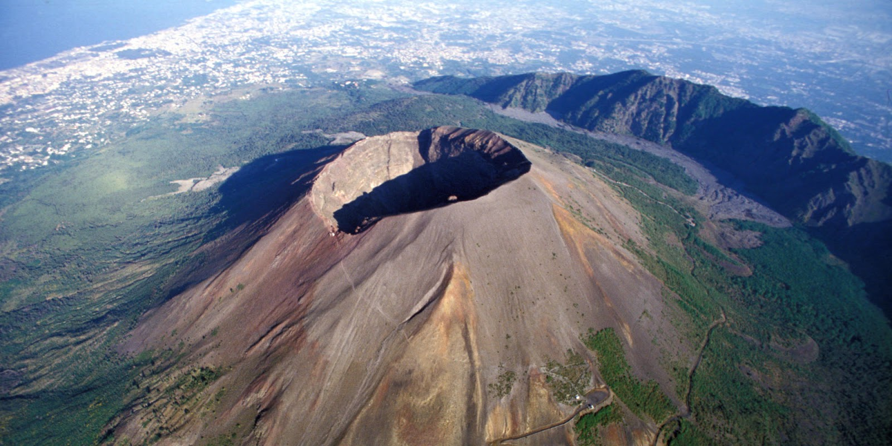
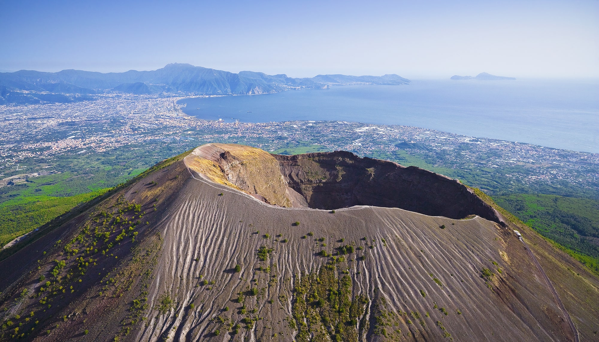

the history of Vesuvius
 



Везувий действующий вулкан на юге Италии, примерно в 15 км от Неаполя. Расположен на берегу Неаполитанского залива в провинции Неаполь, регион Кампания. Входит в Апеннинскую горную систему, имеет высоту 1281 м
Предположительно вулкан Везувий появился 25000 лет назад в результате столкновения двух тектонических плит. Следы наиболее древнего из известных извержений датированы 6940 ± 100 годом до н. э
В 79 году н. э. произошло одно из самых катастрофических извержений вулкана Везувий близ Неаполя. В результате этого катаклизма погибли несколько тысяч жителей римских городов Помпеи, Геркуланум и Стабии и нескольких небольших селений и вилл, располагавшихся у самого подножия вулкана